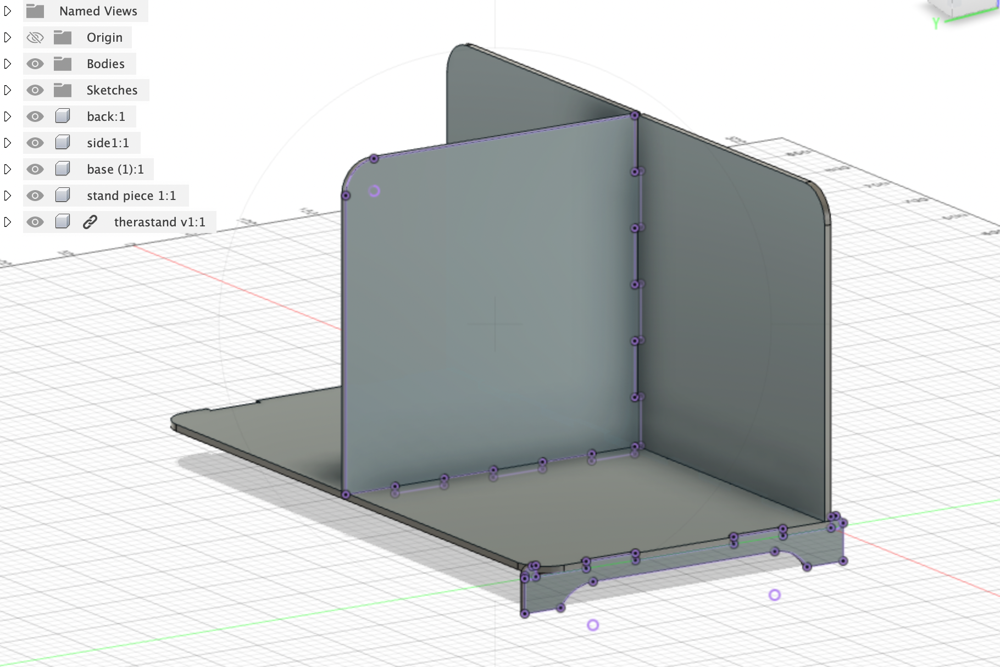
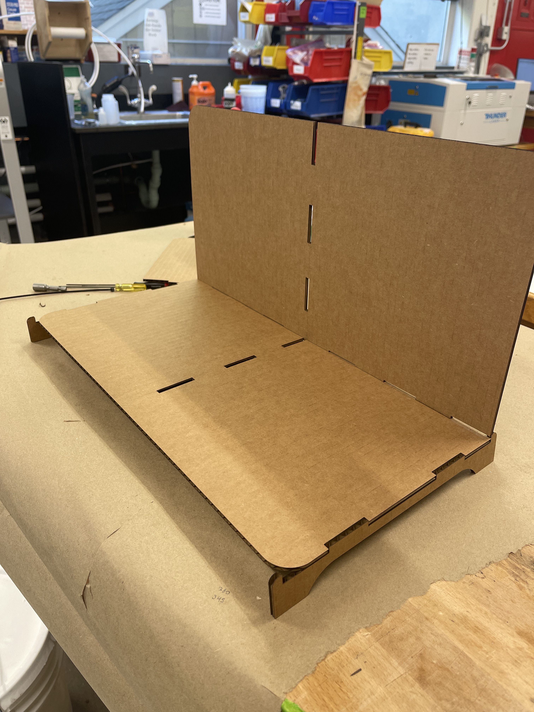
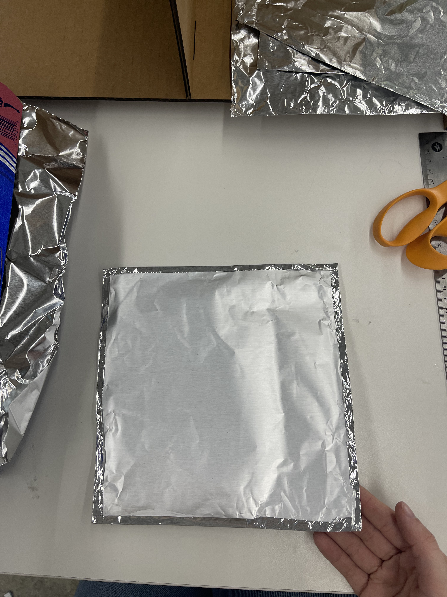
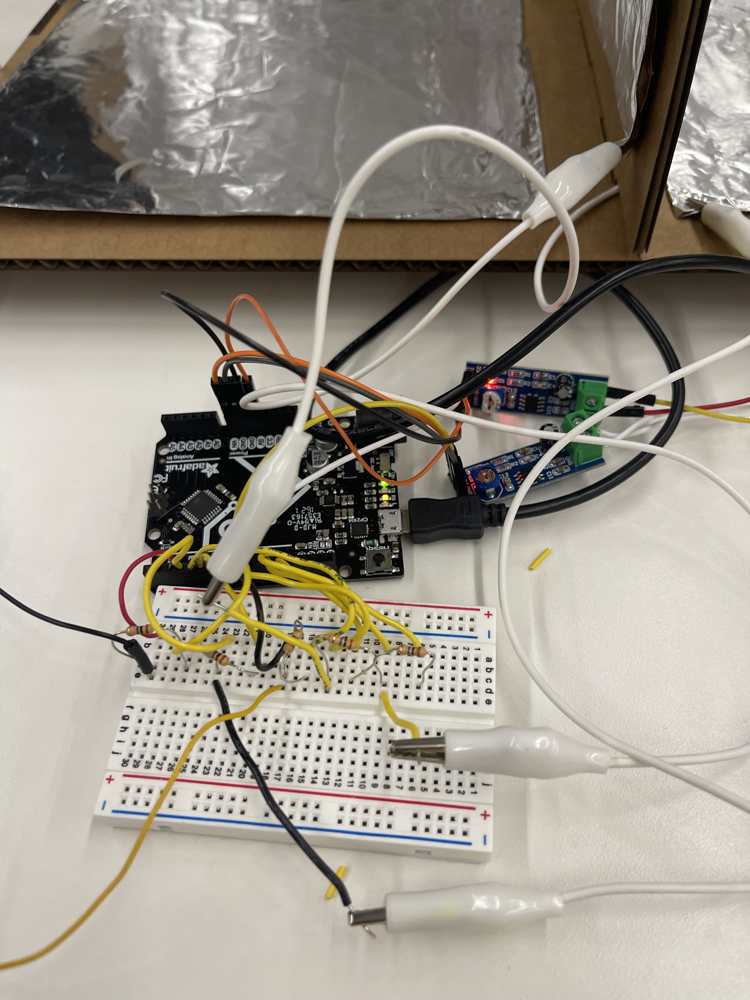
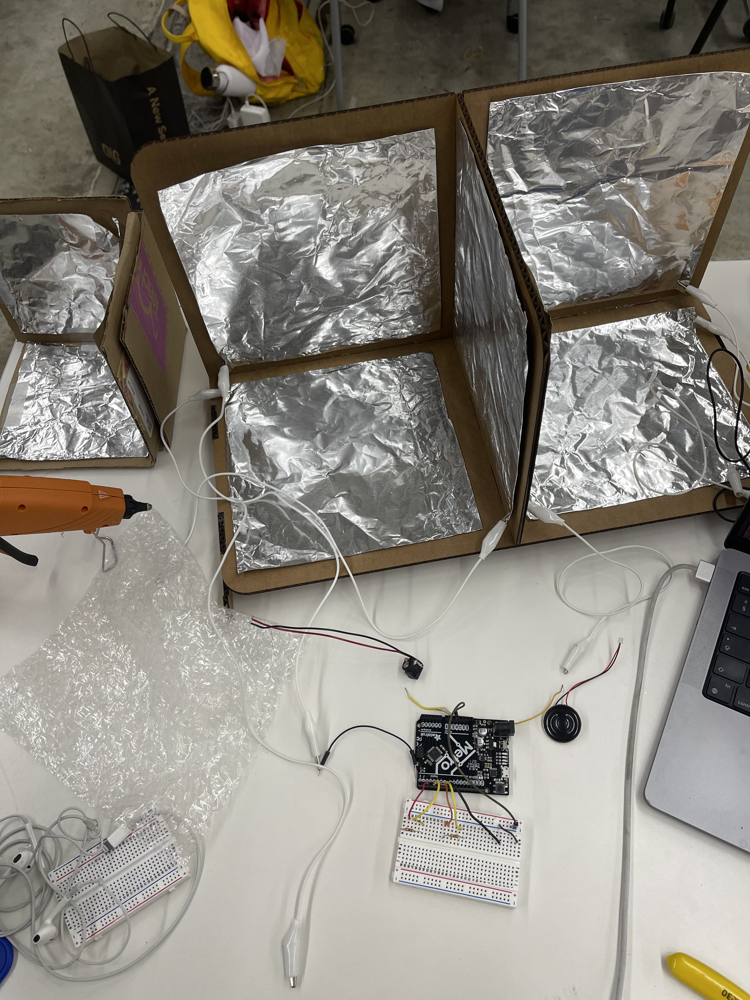
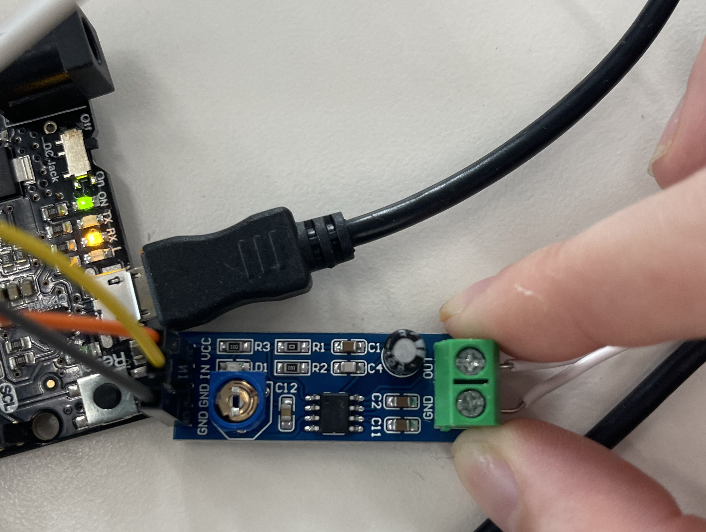

<style>
h3 {
color: DeepPink;
}
h2 {
color: DeepBlue;
text-align: center;
}
img {
display: block;
margin-left: auto;
margin-right: auto;
}
</style>
<div class="container-fluid">
### Final Project
<h1> The 3D Theramin</h1>
<p1>
<b> Demo Video </b> <br>
<iframe width="800" height="400" src="https://www.youtube.com/embed/-oTCzAhE7pQ" title="YouTube video player" frameborder="0" allow="accelerometer; autoplay; clipboard-write; encrypted-media; gyroscope; picture-in-picture" allowfullscreen></iframe>
<br> <br>
For my final project, I wanted to create a musical instrument of some sort. For a long time I have been fascinated with early electronic instruments like the Theramin, an early sensor-based instrument which allows the performers to change volume and pitch parameters exclusively based on the distance between one's hand and the sensor.<br>
<iframe width="560" height="315" src="https://www.youtube.com/embed/K6KbEnGnymk" title="YouTube video player" frameborder="0" allow="accelerometer; autoplay; clipboard-write; encrypted-media; gyroscope; picture-in-picture" allowfullscreen></iframe>
<br> <br>
My initial goal was to explore the idea of making a theramin polyphonic: the original theramin only allows for one tone to be produced at a time owing to its setup assigning one parameter to each hand. I could not simply just remove the volume parameter and have pitch assigned to both hands: including volume is essential to making the instrument 'expressive' and gestural. It would also be cumbersome to turn sound on and off if both hands controlled pitch—a foot pedal would be the only reasonable way to do this, and would seem excessibly bulky.
<br> <br>
While discussing this with Nathan and considering a variety of sensor options that could increase the parameters that could be controlled with each hand, he mentioned the option of a 3D capacitative sensor box.
<a href="https://www.instructables.com/DIY-3D-Controller/">The concept is based on this tutorial, where you can use the box to play tictactoe!</a><br>
To make my version of this project you will need
- 2 amplifiers <br>
- An arduino uno <br>
- 3+ 10k resistors<br>
- Cardboard <br>
— A breadboard <br>
— Two speakers <br>
— Lots of wires and alligator clips <br> <br>
Firstly I assembled a cardboard & foil box that is similar to the tutorial above. I knew I wanted to make a *slightly* more attractive and polished contraption for my final project, but I tested out the form of it with some scrap cardboard. Here's how it looked:
<br>
<video controls width="350">
<source src="protobox.mp4"
type="video/mp4">
</video> <br>
I figured out that if I created two of the 3D sensors back to back, I could use both hands to control 3 parameters! The would mean that, at the very least, each hand could control the full capacity of the original theramin (pitch, volume), as well as including an additional parameter, such as pan, delay, or something else all together. <br>
<img src="protobox2.jpg" alt="the prototype" width="600" class="center">
<br> <br>
Next I took to fusion 360 and designed an inclusive box form that could cater for both 3D sensing environments. I learned a lot about designing in Fusion from this process, mostly following these tutorials but adapting for the specific needs of my project. Essentialy I was creating a slot-together box with two faces, and then a divider in between. I also added two stand legs to elevate the box and give it a more polished look.
<br>
<iframe width="560" height="315" src="https://www.youtube.com/embed/vT_FH3lL-3A" title="YouTube video player" frameborder="0" allow="accelerometer; autoplay; clipboard-write; encrypted-media; gyroscope; picture-in-picture" allowfullscreen></iframe> <br> <br>
<iframe width="560" height="315" src="https://www.youtube.com/embed/7riGolu7BpA" title="YouTube video player" frameborder="0" allow="accelerometer; autoplay; clipboard-write; encrypted-media; gyroscope; picture-in-picture" allowfullscreen></iframe>
<br>
This is how the model in Fusion 360 looked: <br>

<br> <br>
And here's how the cardboard looked after being lasercut:

<br><br>
Download my STL files by clicking the image below:
<a href="POLYMIN.zip" download="polymin">
</a>
Next, I needed to cut and attach the foil plates. I cut the foil plates to slightly smaller than my box dimensions (about 7 inches sq) and folded over the edges for a cohesive look. I then attached them with hot glue to my box form.

Then I began to build my circuit. I connected each plate with crocodile clips to a breadboard connected to my Arduino, with the 10 Ohm resistors. I then connected two amplifiers to two speakers. The final circuit was as such: <br>

<br>
And here's how it wired up to the theramin:

Note: some tutorials I saw online did not use an amplifier to make different theramins: in my experience the sound production from the device was negligible until an amplifier (below) was connected.
 <br>
</p1>
<p>
Finally, I create the code. I used the cap sensor library that comes with Arduino, as well as a Volume library by Connor Nishijima which is available to download on the Arduino website. The latter library meant that I was able to set one parameter as volume, a function which the Arduino Tone() function alone is not able to do.
<br><br>
You can see in the code that it is designed for up to 5 plates: ultimately my demo features 3 plates, one controlling delay, one for pitch, and one for volume. However, the circuit can be duplicated to include more pitches, as long as the code is able to handle multiple tones at once, a feature which I have not yet explored.
<br><br>
Alternatively, one could reproduce the Arduino circuit with a second arduino to have the same functionality on both sides. The advantage of including a second Arduino is that the tone() function could be used on each microcontroller for a polyphonic effect, without complicated code. For the purposes of this project, however, I created a 3 parameter interface. <br><br>
The code that I used is as follows:</p>
<pre>
<code>
#include <Volume3.h>
#include <CapacitiveSensor.h>
CapacitiveSensor capSensor1 = CapacitiveSensor(4,2);
CapacitiveSensor capSensor2 = CapacitiveSensor(7,5);
CapacitiveSensor capSensor3 = CapacitiveSensor(6,8);
//CapacitiveSensor capSensor4 = CapacitiveSensor(3,11);
//CapacitiveSensor capSensor5 = CapacitiveSensor(12,13);
void setup() {
Serial.begin(9600);
}
void loop() {
long sensorValue1 = capSensor1.capacitiveSensor(30);
long sensorValue2 = capSensor2.capacitiveSensor(30);
long sensorValue3 = capSensor3.capacitiveSensor(30);
//long sensorValue4 = capSensor4.capacitiveSensor(30);
//long sensorValue5 = capSensor5.capacitiveSensor(30);
Serial.print("Sensor1: ");
Serial.print(sensorValue1);
Serial.print("Sensor2: ");
Serial.println(sensorValue2);
Serial.print("Sensor3: ");
Serial.println(sensorValue3);
//Serial.print("Sensor4: ");
//Serial.println(sensorValue4);
//Serial.print("Sensor5: ");
//Serial.println(sensorValue5);
int val1 = map(sensorValue1, 0, 5000, 50, 4000);
int val2 = map(sensorValue2, 0, 10000, 10, 1000);
int val3 = map(sensorValue3, 0, 100, 10, 1000);
//int val4 = map(sensorValue4, 0, 100, 10, 1000);
//int val5 = map(sensorValue5, 0, 100, 10, 1000);
//Serial.print("val 3: ");
//Serial.println(val3);
vol.tone(9,val1,20);
delay(val2);
//tone(8,val1,20);
//uint16_t volume = val3;
vol.noTone();
//delay(val2);
vol.tone(10,val1,20);
delay(val2);
vol.noTone();
//delay(val2);
}
</code>
</pre>
<p2>
While the 4th and 5th pins are commented out in this code, they can easily be incorporated based on small adjustments to the circuit!
<br>
<br>
<b> Reflections and Outlooks </b> <br> <br>
As shown in the demo, the 3D Theramin does work, and the cap sensors were able to respond to some extend to hand gestures. However, I would later find that my circuit would only work if I grounded the circuit literally through my body, by holding firmly onto the Arduino.
<br>
I also would come to find that producing polyphony using the tone() function alone is rather challenging—I would recommend that those aiming for polyphony consider using multiple/different microcontrollers.
<br>
While the cap sensor was a simple, fun and cheap way to detect hand movements, I would say that a more advanced and replicable version of this project might utilise a more advanced sensor, such as an Xbox kinect sensor. This all being said, the project is still a fun and interactive way to produce electronic sounds—and in my opinion some of the sound outputs are super cool, especially when sampled and further edited on a DAW!
</p2>